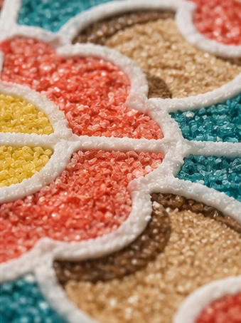
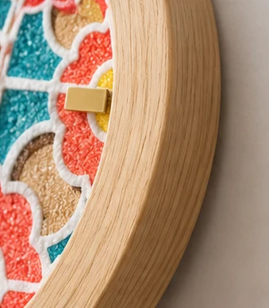
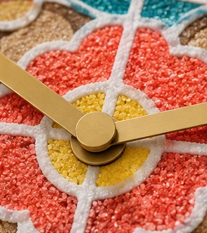
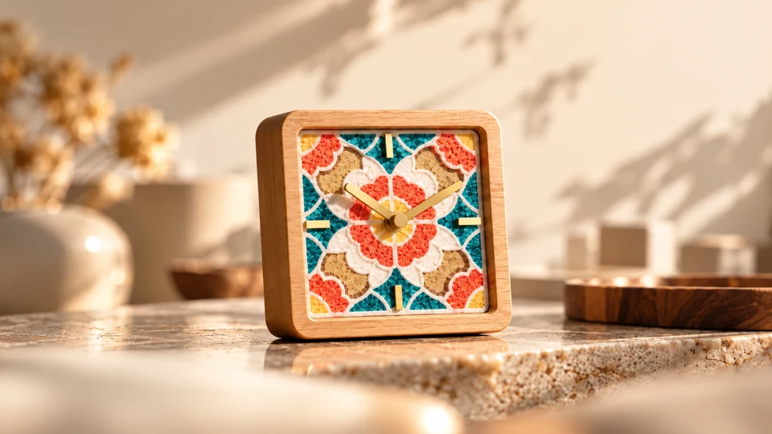

01 / THE COLOUR
A playful palette.
Teal, coral red and golden yellow.
A floral pattern that brings the whole face to life.
JNL STUDIO — TILE TIME
A familiar rhythm. A fresh perspective.
Bring a little joy to your everyday.
01 / A CLOSER LOOK
01 / THE COLOUR
Teal, coral red and golden yellow.
A floral pattern that brings the whole face to life.
02 / THE FRAME
Natural-looking wood tones soften the colour
and give each silhouette a calm outline.
03 / THE DETAILS
Gold-tone hands and hour markers.
A simple contrast against an expressive face.
Two shapes, the same joyful palette. Whether you prefer a clean square or a soft round, each clock brings a splash of colour and a touch of warmth to your space.
A bold frame for everyday colour.
A softer silhouette for a harmonious look.
THE DETAILS
From the playful palette to the warm wood tones, every element brings a little joy to your everyday.

01
A cheerful mix of teal, coral and yellow to brighten your space.

02
A wood-tone frame adds warmth and character to the silhouette.

03
Gold-tone hands add a refined touch and a gentle shine.
SEE THEM TOGETHER
A little colour, wherever the day unfolds.

DESIGN AT A GLANCE
Two distinctive silhouettes, united by a colourful floral face, warm wood tones and golden accents.
WHICH ONE FEELS LIKE YOU?
Same spirit. Different silhouettes. Bring a little joy to your everyday.
A FEW THINGS TO KNOW
The collection shown here includes a rounded-square clock and a circular clock. Each features a colourful floral face, a wood-tone frame and gold-tone hands.
Exact dimensions, materials, movement and power requirements have not yet been confirmed. Please check these specifications with the seller before choosing.
This page is a product showcase. Pricing, availability and ordering details are not yet published. Use “Copy this design’s details” to save your preferred design for an enquiry.
These are the supplied product visuals. Please confirm the final item’s colours, finish and specifications with the seller; appearance may vary with lighting and screen settings.
LET THE EVERYDAY FEEL A LITTLE BRIGHTER.